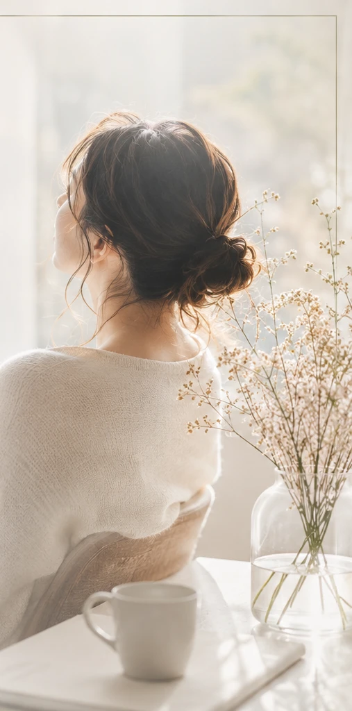
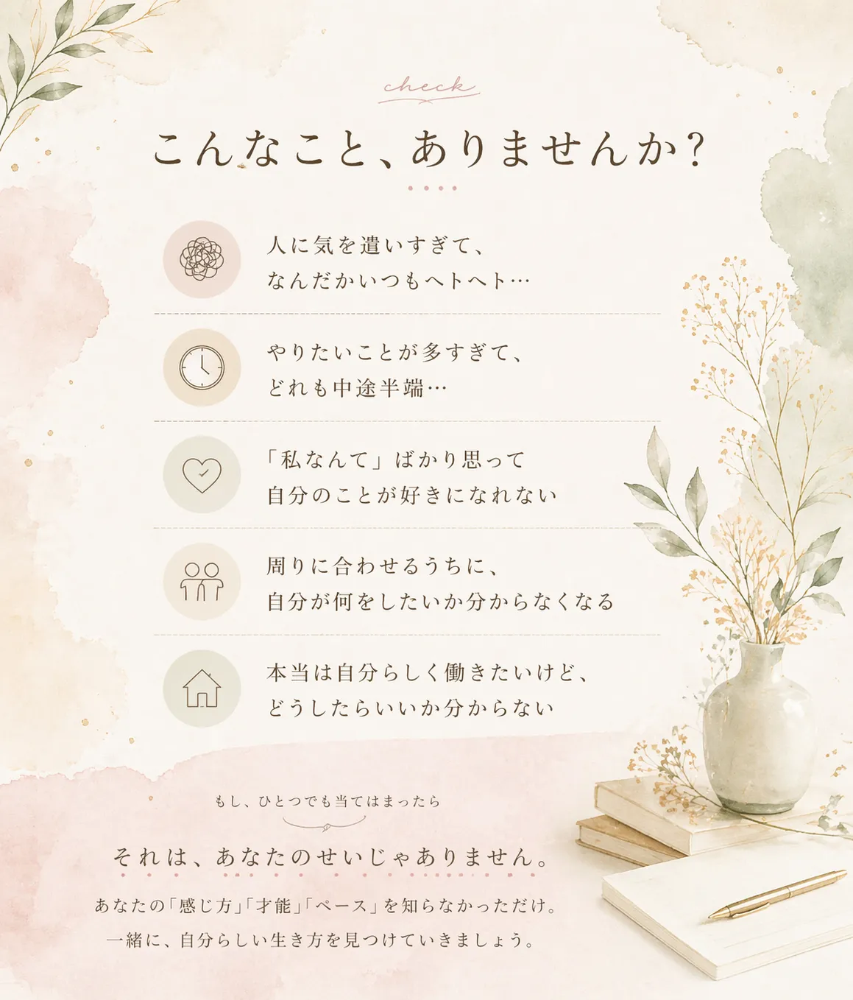
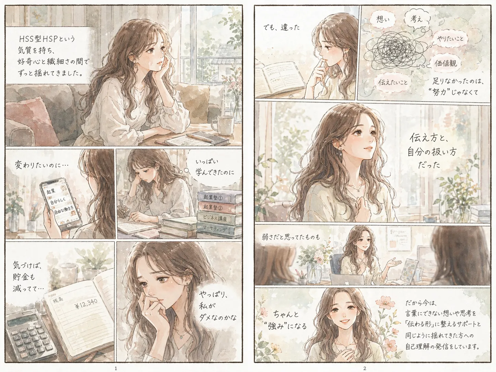

やさしい物語と、HSS型HSPのための気づきの一冊。
ビジュアルと言葉でお届けしています。
はじめまして、川上 りさです。
HSS型HSPという気質を持ち、好奇心と繊細さの間でずっと揺れてきました。 転職を繰り返し、夫の海外駐在で専業主婦になってからは人間関係に疲弊。 「このまま終わりたくない」と思い、起業塾をハシゴして、貯金も使い切りました。
そんな中で気づいたのは、問題は「努力不足」ではなく 「伝え方」と「自分の扱い方」だったということ。
弱さだと思っていたものは、ちゃんと活かせば強みになる。
だから今は、言葉にできない想いや思考を「伝わる形」に整えるサポートと、
同じように揺れてきた方への自己理解の発信をしています。
